Хронология событий

Хронология основных событий
В июне 1988 года на базе Всесоюзного хозрасчетного внешнеторгового объединения «Совкомфлот» было создано акционерное коммерческое предприятие – одно из первых в истории современной России. Общий дедвейт флота, не имевшего четко выраженной специализации, составлял 1,6 млн тонн. Учредителями предприятия стали Минморфлот СССР и морские пароходства: Дальневосточное, Черноморское, Новороссийское, Латвийское, Балтийское и Советское Дунайское. Благодаря грамотно избранной стратегии развития, «Совкомфлот» постепенно трансформировался из пароходства средних размеров в одного из мировых лидеров в области морской транспортировки энергоносителей.
1973
- Начало коммерческих операций по фрахтованию иностранного тоннажа
1988
- Создание АКП «Совкомфлот» - одного из первых акционерных обществ в истории современной России
1989
- 1989 Первая финансовая отчетность по международным стандартам
1990
- Получение первых синдицированных кредитов международных банков
1991
- Учреждение технического менеджера флота группы компаний – SCF Unicom
1995
- Начало самостоятельных операций по техническому менеджменту танкерного флота
2001
- Первая погрузка нефти в порту Приморск (Ленинградская область)
2004
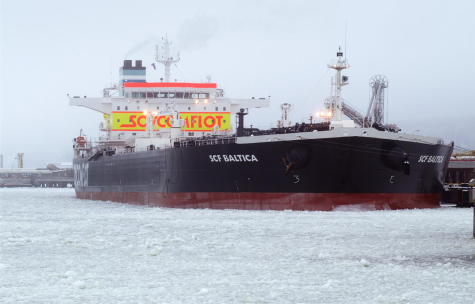
- Принятие стратегии развития, направленной на морскую транспортировку энергоресурсов, на 2005-2010 гг.
2006
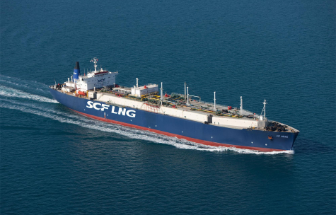
- Начало эксплуатации газовозов СПГ
2007
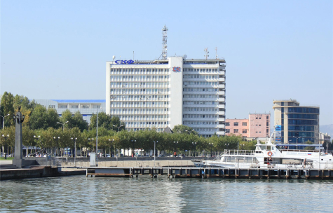
- Принятие стратегии развития, направленной на морскую транспортировку энергоресурсов, на 2005-2010 гг.
2008
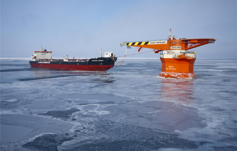
- Первая погрузка нефти на российском арктическом шельфе (проект «Варандей»)
- Cоздание нового бренда группы компаний – СКФ (SCF)
2009
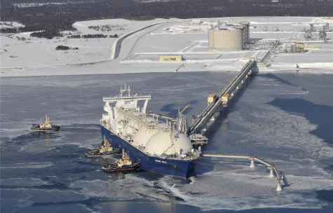
- Погрузка первого российского СПГ (проект «Сахалин-2»)
- Начало эксплуатации многофункциональных судов снабжения добывающих платформ
2010
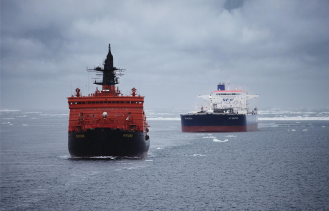
- Первый в истории мирового судоходства рейс крупнотоннажного танкера «СКФ Балтика» (дедвейт 113 тыс. тонн) по трассам Северного морского пути
2011
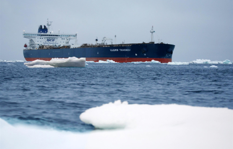
- Открытие представительства в Юго-Восточной Азии (Сингапур)
- Рейс крупнейшего в истории танкера «Владимир Тихонов» (дедвейт 163 тыс. тонн) по трассам Северного морского пути
- Принятие стратегии развития до 2017 года
2012
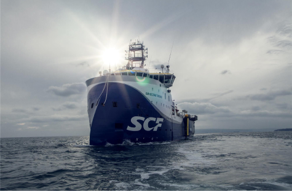
- Учреждение группы компаний «СКФ Арктика» в рамках расширения участия в проектах на континентальном шельфе России
- Начало эксплуатации судна геофизической разведки «Вячеслав Тихонов»
- Первая инженерная операция по морской буксировке основания добывающей платформы для нового шельфового месторождения проекта «Сахалин-1»
2013
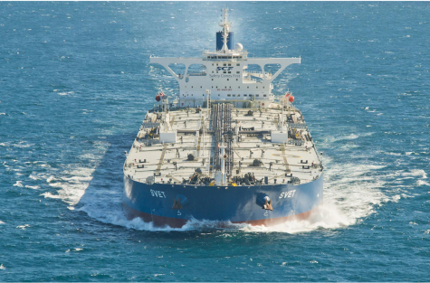
- «Совкомфлот» отмечает 25-летие
- Крупнейший танкер российского торгового флота получил имя «Свет» (типоразмер VLCC, дедвейт 320 тыс. тонн)
2014

- Арктический челночный танкер «Михаил Ульянов» (дедвейт 70 тыс. тонн) перевёз первую партию сырой нефти, добытой на российском арктическом шельфе
- Основано совместное предприятие в сфере морской сейсморазведки с французской компанией CGG
- Успешно завершена модернизация порта Сочи в рамках подготовки к XXII-м Зимним Олимпийским Играм 2014 года
2015
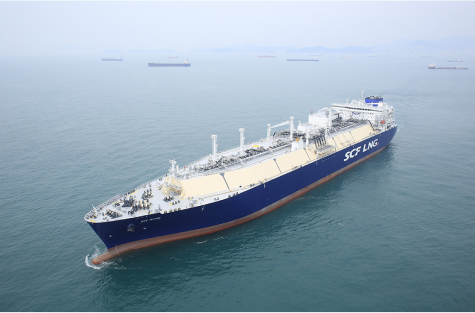
- Двойной юбилей работы СКФ на проекте «Сахалин-2»: газовоз «Гранд Елена» совершил сотый рейс из порта Пригородное в Японию, а танкер «Залив Анива» доставил японским потребителям четырехсотую партию нефти с начала круглогодичных отгрузок в 2008 году
- Завершено строительство серии ультрасовременных газовозов СПГ типоразмера Atlanticmax: «Великий Новгород», «Псков», «СКФ Мелампус» и «СКФ Митре»
2016
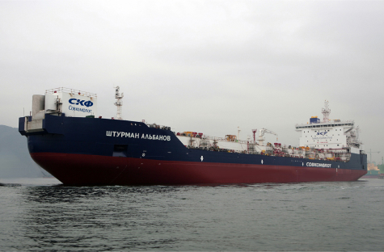
- «Совкомфлот» укрепил свои позиции в стратегически важных сегментах рынка, приобретя 9 современных танкеров ледового класса у компании PRISCO и 2 ледокольных судна снабжения морских платформ у Swire Pacific Offshore
- Система технического управления флотом СКФ реструктурирована и консолидирована под единым брендом SCF Management Services
- Завершено строительство серии уникальных арктических челночных танкеров «Штурман Альбанов», «Штурман Малыгин» и «Штурман Овцын» для круглогодичной транспортировки нефти из Обской губы
- ПАО «Совкомфлот» выступил титульным спонсором СКФ Черноморской регаты больших парусников 2016
2017
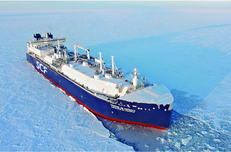
- «Совкомфлот» совместно с Shell первыми в отрасли сделали шаг к переводу нефтяных танкеров на газомоторное топливо
- Танкер «Штурман Альбанов» стал обладателем международной премии Marine Propulsion Awards 2017 в номинации «Судно года 2016»
- Принят в эксплуатацию «Кристоф де Маржери», первый в мире ледокольный танкер для перевозки СПГ. Он предназначен для обслуживания проекта «Ямал СПГ»
- Флот СКФ пополнили три новых ледокольных суда снабжения и обеспечения добывающих платформ для проекта «Сахалин-2». Они названы в честь адмиралов Геннадия Невельского, Степана Макарова и Федора Ушакова
2018
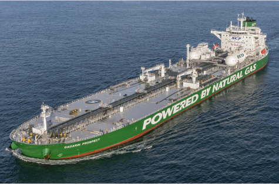
- Начата эксплуатация «зеленой» серии танкеров типа «Проспект Гагарина», которые используют газомоторное (СПГ) топливо в качестве основного
- Танкер «Ломоносовский проспект» на газомоторном топливе успешно завершил переход по Севморпути из Азии в Европу
- Флот многофункциональных ледокольных судов СКФ, обслуживающих нефтегазовые проекты на Сахалине, достиг 10 единиц после того, как в эксплуатацию принято судно «Евгений Примаков»
- При поддержке «Совкомфлота» на Дальнем Востоке России впервые в новейшей истории региона прошла международная регата больших учебных парусников
2019
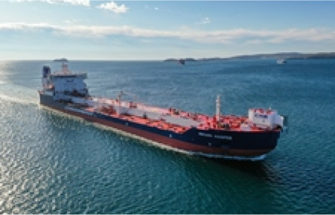
- «Совкомфлот» стал победителем престижной премии Lloyd’s List Europe Awards 2019 в номинации «Компания года»
- «Совкомфлот» и «НОВАТЭК» создали совместное предприятие «Современный морской арктический транспорт СПГ» («СМАРТ СПГ»), которое будет владеть и управлять флотом газовозов для обеспечения проекта «Арктик СПГ 2»
- Компания внедряет экологически более безопасное газомоторное топливо в практику арктического судоходства. Три танкера «зеленой» серии СКФ выполнили грузовые рейсы по Севморпути, используя только СПГ-топливо
- В преддверии 200-летия открытия Антарктиды новому челночному танкеру СКФ присвоено имя Михаила Лазарева, одного из первооткрывателей шестого материка Земли
2020
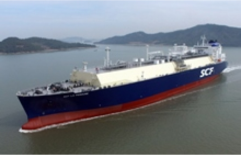
- «Совкомфлот» стал победителем отраслевой премии Seatrade Maritime Awards International 2020 в номинации «Судоходная компания года»
- СКФ продолжает наращивать портфель долгосрочных индустриальных контрактов: в течение 2020 года оператору проекта «Арктик СПГ 2» отфрахтованы 17 новых ледокольных газовозов
- Приняты в эксплуатацию газовозы нового поколения «СКФ Лаперуз» и «СКФ Баренц». Суда одними из первых в мире оборудованы системой частичного повторного сжижения отпарного газа
- Газовоз «Кристоф де Маржери» стал первым в истории крупнотоннажным грузовым судном, которое преодолело трассу Севморпути в восточном направлении в мае, на два месяца раньше традиционного начала навигации
2021
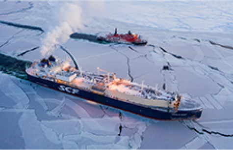
- Арктический газовоз «Кристоф де Маржери» осуществил экспериментальный круговой рейс по Севморпути: впервые в истории крупнотоннажное грузовое судно выполнило транзитный переход по восточному сектору СМП в феврале. Это позволило существенно расширить временные рамки навигации по СМП
- Танкер «Проспект Гагарина» успешно осуществил первую в США операцию по морской СПГ-бункеровке танкера типоразмера «Афрамакс». Бункеровка была выполнена на рейде порта Канаверал (штат Флорида)
- «Совкомфлот» и Shell организовали юбилейную, 150-ю операцию по морской бункеровке крупнотоннажных танкеров зеленой серии СКФ газомоторным топливом
2022
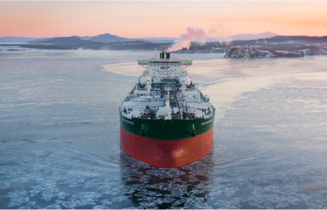
- «Совкомфлот» принял в эксплуатацию танкер нового поколения на СПГ-топливе «Океанский проспект» – головное судно серии из двух нефтеналивных танкеров типоразмера «Афрамакс», заказанных компанией на ССК «Звезда»
- СКФ и «Газпром нефть» осуществили первую в России СПГ- бункеровку, операция с участием танкера «Проспект Королева» прошла в порту Усть-Луга
- Завершено строительство серии новых челночных танкеров ледового класса для работы в рамках проекта «Сахалин-1»